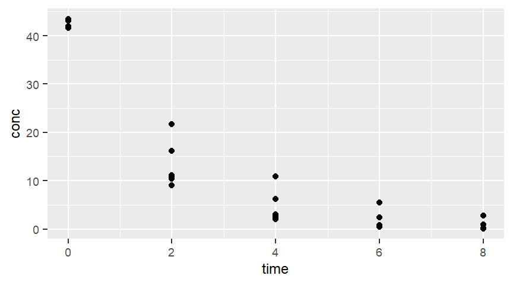
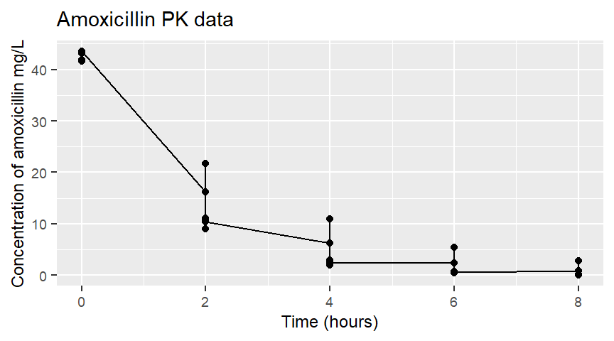
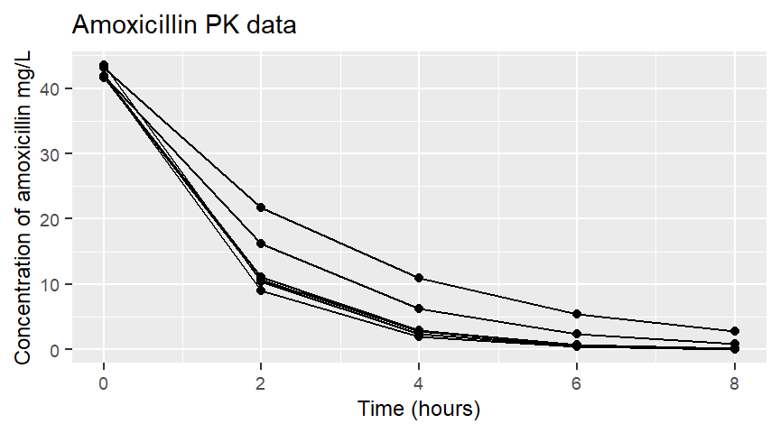
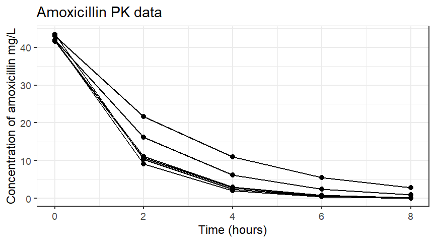
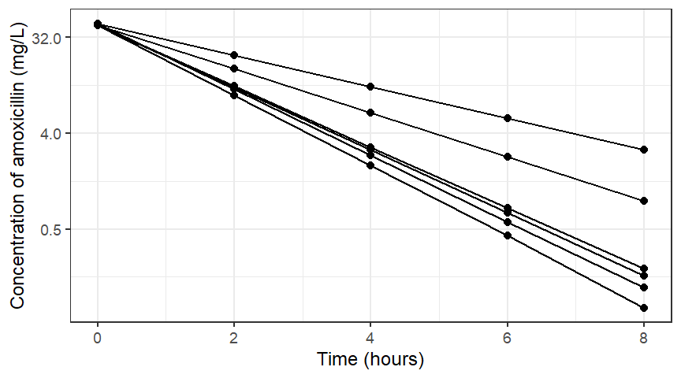
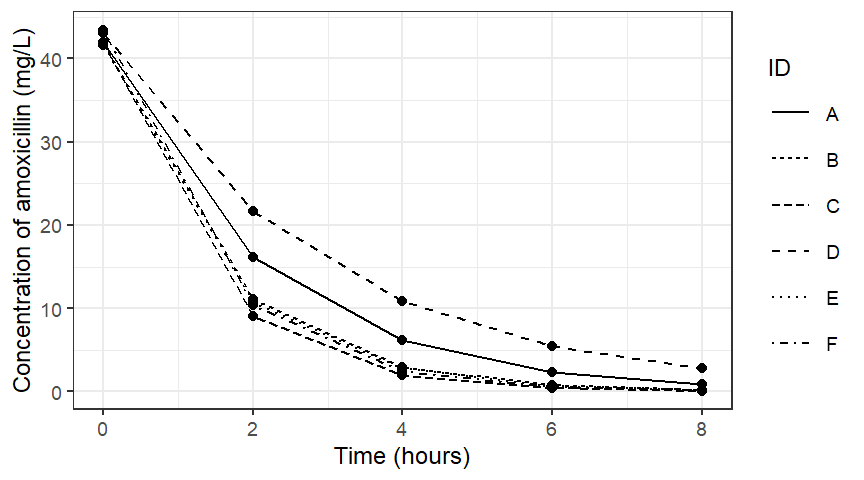
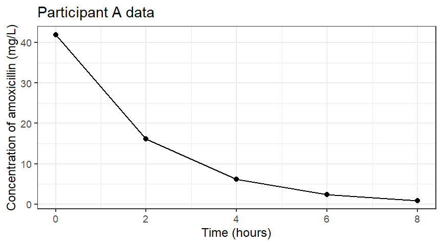
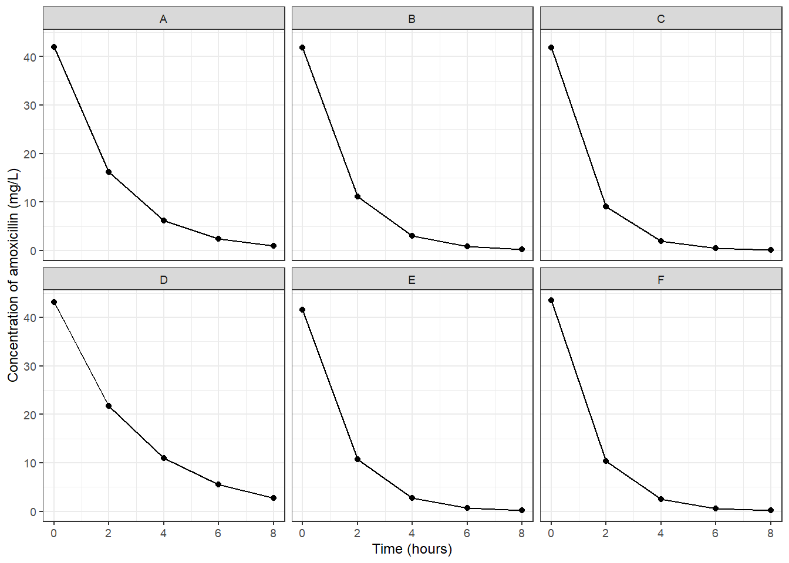

Solutions - Introduction to visualising pharmacokinetic data using ‘R’

Introduction
In this session you will be introduced to the practical side of pharmacokinetics - with a data workshop. You will be introduced to ‘R’: a language and environment for statistical computing and its parter programme ‘RStudio’, which provides a handy user interface for ‘R’.
We will use ‘R’ to undertake visualisation of pharmacokinetic data using the ‘R’ package ‘ggplot2’. We will also estimate an important pharmacokinetic parameter (\(C_{max}\)) associated with the time concentration profile of an IV-bolus dose of a drug.
This session has been designed to progress your knowledge of pharmacokinetics and give you an introduction into the world of using code to analyse, visualise and communicate with data - skills that the drug development industry consistently tell us they need from graduates.
Learning outcomes
In today’s session, we will aim to build on the material covered in the pre-session unit on Canvas. By the end of this week you should be able to:
- Access R and RStudio onto your own computer or a University PC
- Understand the different windows in the RStudio desktop
- Make and save an R script
- Undertake some basic calculations using R
- Create a directory and set the R working directory using setwd()
- Import a .csv data file into R
- View a data frame
- Describe the difference between ‘long’ and ‘wide’ data formats and which is used for pharmacokinetic modelling
- Download a package to your R library
- Call a package from the R library
- Plot some pharmacokinetic data using the R package ggplot2
- Change the aesthetics of plots
- Use ggplot2 to transform axes and plot individual data using facet_wrap()
- Use R to undertake basic, descriptive (non-compartmental) analysis of some pharmacokinetic data to
- Estimate C~max
This document is designed to provide you with notes of the session and be a handy resource when you come to revision. There are examples of code and the corresponding output from R as we go along.
Accessing R and RStudio on a University computer 
The two key tools for this session will be R and RStudio. These are free, open source pieces of software. They are both available on the University computers, but you may choose to download them onto your personal laptop or home computer.
‘R’ is a language and environment for statistical computing. R is very powerful but it was not designed with the ‘everyday’ user in mind. ‘RStudio’ is a user interface that makes using ‘R’ far easier. You can think of the relationship between ‘R’ and ‘RStudio’ as similar to the relationship between the lines of code (R) running your computer that you do not see behind the user interface you use - MS Windows (RStudio) or as the relationship between equipment for an experiment (R) and the laboratory that houses it (RStudio).
When you are using a University computer, you need to access RStudio via the University servers.
The link for this is here.
Some basics in R
Open RStudio and then open a new R script by clicking on the plus page in the top left hand corner of the RStudio window. You are now ready to start writing an R script. Try doing some simple maths and running the code by clicking ‘Run’ or pressing ctrl+enter (cmd+enter if using a Mac).
#Some example script
3+4 #simple addition## [1] 73*26 #multiplication## [1] 78log(2) #logarithm## [1] 0.6931472#note that I can make comments after a '#' that are ignored when I run lines of codeWe can store items for later use. We can even put these together for a table.
a<-seq(3) # asks for a sequence of 3 numbers and stores it as the object 'a'
a #calls the stored object 'a'## [1] 1 2 33*a # multiply all elements of 'a' by 3## [1] 3 6 9mon<- c("JAN","FEB","MAR")
CAL<-data.frame(mon,a)
CAL #show 'CAL' data frame in R console.## mon a
## 1 JAN 1
## 2 FEB 2
## 3 MAR 3Task: Run through some basic calculations in R, store a vector of numbers and see if you can work out how to raise this to a power (e.g. square it).
Creating a directory, setting the working directory and importing a csv file
When working on a project in R, it is standard practice to navigate to a folder where you want to create and store your work for the piece of work you are doing.
You can check what folder R is currently working in by using the the folder that your data is in using the getwd() function. Run this now to see where your current folder is
getwd()
# you will see an output that includes your username. This is your 'H:' drive on the University computersLet’s create a folder for today’s session. Let’s call it ‘intro_r’
dir.create("intro_r")If you now run the following:
list.files()You will see that the new folder has been created. If you click on File explorer you will see this folder has been created within your H: drive.
We now need to move R to work in this folder. W
setwd("intro_r")You can also setwd() using your mouse and clicking on ‘session’ and ‘set working directory’.
I recommend you now click save and save your R script in this folder so you can come back to it later. You might use a name like ‘firstrscript.r’. Whatever you choose, use the file extension ‘.r’.
Import the data
Let’s get some PK data in to work with. I have put the data set on canvas for you but you can also call it straight from my Github using the following command:
amox<- read.csv("https://raw.githubusercontent.com/dlonsdal/SGUL_PK_data/main/amoxicillin.csv")Task:
- Create a new directory and check it has worked by running list.files()
- Set your working directory to this new folder
- Import the data from Github
Inspect the data
If you click on the arrow by the amox object in your environment tab in RStudio, you will see that ‘amox’ contains 30 observations of 3 variables. An ID variable, time which is an integer value and conc which contains numbers.
This data set is a simulated pharmacokinetic experiment. Six participants were give an IV bolus (given very fast) of 1000 mg of amoxicillin and plasma concentrations were measured every 2 hours for 8 hours. 8 hours is a standard dosing interval for amoxicillin.
There are some handy, built in R functions that you can use to have a look at the data.
head(amox) # shows you the first 6 rows of the data frame## ID time conc
## 1 A 0 41.93
## 2 A 2 16.15
## 3 A 4 6.22
## 4 A 6 2.40
## 5 A 8 0.92
## 6 B 0 41.83amox$ID # shows you the 'ID' column## [1] "A" "A" "A" "A" "A" "B" "B" "B" "B" "B" "C" "C" "C" "C" "C" "D" "D" "D" "D" "D" "E" "E" "E"
## [24] "E" "E" "F" "F" "F" "F" "F"summary(amox$ID) #summarises the ID column. 5 samples per participant## Length Class Mode
## 30 character characteramox[15,] # looks at row 15## ID time conc
## 15 C 8 0.09amox[,2] # looks at column 2## [1] 0 2 4 6 8 0 2 4 6 8 0 2 4 6 8 0 2 4 6 8 0 2 4 6 8 0 2 4 6 8
Task: Inspect the data
Long and wide data
Long data
You can also look at the data by clicking on ‘amox’ in the global environment. RStudio will show you the data table. What do you think about the format (Table 1)?
| ID | time | conc |
|---|---|---|
| A | 0 | 41.93 |
| A | 2 | 16.15 |
| A | 4 | 6.22 |
| A | 6 | 2.40 |
| A | 8 | 0.92 |
| B | 0 | 41.83 |
| B | 2 | 11.12 |
| B | 4 | 2.96 |
| B | 6 | 0.79 |
| B | 8 | 0.21 |
| C | 0 | 41.89 |
| C | 2 | 9.08 |
| C | 4 | 1.97 |
| C | 6 | 0.43 |
| C | 8 | 0.09 |
| D | 0 | 43.07 |
| D | 2 | 21.69 |
| D | 4 | 10.92 |
| D | 6 | 5.50 |
| D | 8 | 2.77 |
| E | 0 | 41.59 |
| E | 2 | 10.73 |
| E | 4 | 2.77 |
| E | 6 | 0.71 |
| E | 8 | 0.18 |
| F | 0 | 43.47 |
| F | 2 | 10.34 |
| F | 4 | 2.46 |
| F | 6 | 0.58 |
| F | 8 | 0.14 |
It’s pretty ‘long’ and unwieldy isnt it! Whilst this is not very easy for us to look at, believe it or not, it does make it quite easy for computer programs like R or MS Excel to analyse and manipulate. It’s also the format data needs to be in to undertake pharmacokinetic analysis, so you will need to get used to formatting tables like this. In long form, each event for each ID has its own row.
If you want to look at data in another way, for example by Time or by ID you can use R to do this to rearrange the data.
Wide data
| ID | 0 | 2 | 4 | 6 | 8 |
|---|---|---|---|---|---|
| A | 41.93 | 16.15 | 6.22 | 2.40 | 0.92 |
| B | 41.83 | 11.12 | 2.96 | 0.79 | 0.21 |
| C | 41.89 | 9.08 | 1.97 | 0.43 | 0.09 |
| D | 43.07 | 21.69 | 10.92 | 5.50 | 2.77 |
| E | 41.59 | 10.73 | 2.77 | 0.71 | 0.18 |
| F | 43.47 | 10.34 | 2.46 | 0.58 | 0.14 |
| time | A | B | C | D | E | F |
|---|---|---|---|---|---|---|
| 0 | 41.93 | 41.83 | 41.89 | 43.07 | 41.59 | 43.47 |
| 2 | 16.15 | 11.12 | 9.08 | 21.69 | 10.73 | 10.34 |
| 4 | 6.22 | 2.96 | 1.97 | 10.92 | 2.77 | 2.46 |
| 6 | 2.40 | 0.79 | 0.43 | 5.50 | 0.71 | 0.58 |
| 8 | 0.92 | 0.21 | 0.09 | 2.77 | 0.18 | 0.14 |
Tables 3&4 are examples of data in wide format. They are perhaps a little more intuitive to read, but they are not so easy for a program like R to manipulate.
Checking data for anomalies
One habit to get into when you are working with data is checking that the data for anomalies. This ensures that you have imported into R correctly and that there are no problems in the data base. In the setting of a study or trial, any anomalies you notice in a database should be raised as a ‘data query’.
There are lots of ways to check data. Where data frames are small, like Tables 3&4, you can inspect them visually and check that each participant has the right number of values and check that there are no obvious anomalies. Wide data frames may be easier to undertake visual inspections as you get one row per participant or sample time. Another common thing to do is to plot continuous variables and look for outliers, we will have a look at plotting data in the next section. R has some in built functions that can be helpful in checking data.
Using R to check for anomalies
There are lots of ways you can use R to check data. Here are a few ideas.
summary() function
summary(amox)## ID time conc
## Length:30 Min. :0 Min. : 0.0900
## Class :character 1st Qu.:2 1st Qu.: 0.8225
## Mode :character Median :4 Median : 4.2300
## Mean :4 Mean :12.4970
## 3rd Qu.:6 3rd Qu.:14.8925
## Max. :8 Max. :43.4700Here, the three variables in the amoxicillin data set are summarised. It’s a start, but we can do some more interesting things. To do this, we need to use one of the many available ‘packages’ that R has to offer. Packages are groups of functions (and some times datasets for you to use and learn with) that have been developed by the R community. Packages bring in new functions for us to use with our data.
Calling a package from the R library
R is a little bit like an empty laboratory. You can do some useful things in it (like light a bunsen burner and heat something up) but if you want to do more advanced analytics you need to bring in some additional equipment (like an organ bath). In R these additional bits of kit are called ‘packages’.
I suggest you start by using tidyverse, which is actually a selection of useful packages. When you want to use something like this, you have to call it from the R library of packages with the function library().
Please note, if you are undertaking this work on your own personal computer, you will need to download packages before you use them. This is done with the install.packages() function (e.g. install.packages(‘tidyverse’)). If you are using RStudio on the server, I have downloaded all the packages that you need for this course, but you will have to tell R where to find them before you can call them with the library() function. To do this you will need to run the following code: .libPaths( c(.libPaths(), “/homes/dlonsdale-pharmacokinetics/sghms/bms/shares/Advanced-Pharmacokinetics/4.4.2/library”))
For example:
.libPaths( c( .libPaths(),
"/homes/dlonsdale-pharmacokinetics/sghms/bms/shares/Advanced-Pharmacokinetics/4.4.2/library") )
#note that you need the '.' before 'libPaths'
library(tidyverse)Note that if you are using RStudio on the stats4 server you can download packages yourself by using install.packages() but this downloads the package to your personal hard drive and there is a limited amount of space on this so I recommend against doing this.
Summarising data with summarise() function, using piping %>% and estimating \(C_{max}\)
We will use the summarise() function (note this is different from summary()). Stick summarise() into help in your RStudio help tab and look at the options that summarise() gives you. If you scroll down, you will see some ‘useful functions’ and, at the bottom, it gives you some examples of the function in use. You will see here that there are some funny ‘%>%’ symbols. This is known as piping.
Piping is a tool that allows us to undertake multiple logical steps to achieve a desired output in our text. Technically, %>% is found in the magrittr() package, but when you load tidyverse() , magrittr() is automatically loaded.
Let’s say we wanted to check the maximum concentration in our dataset made sense, to check for outliers. If we apply summarise(amox,max(conc)) we are given 43.47. This is the same output as from summary(), above. What if we want to know the maximum concentration for each ID number. Well, we can do this with piping.
amox%>%
group_by(ID)%>%
summarise(max(conc))
# here we tell R to take 'amox', group by 'ID' then give the min conc## # A tibble: 6 × 2
## ID `max(conc)`
## <chr> <dbl>
## 1 A 41.9
## 2 B 41.8
## 3 C 41.9
## 4 D 43.1
## 5 E 41.6
## 6 F 43.5Now you can see the maximum value for each ID. In pharmacokinetics, the maximum value is known as \(C_{max}\). This is an important pharmacokinetic parameter as sometimes, \(C_{max}\), the peak drug concentration, influences effect (either desired or adverse). We can build our summarise() function to be a bit more powerful. For example:
amox%>%
group_by(ID)%>%
summarise(min(conc),median(conc), max(conc),IQR(conc))## # A tibble: 6 × 5
## ID `min(conc)` `median(conc)` `max(conc)` `IQR(conc)`
## <chr> <dbl> <dbl> <dbl> <dbl>
## 1 A 0.92 6.22 41.9 13.7
## 2 B 0.21 2.96 41.8 10.3
## 3 C 0.09 1.97 41.9 8.65
## 4 D 2.77 10.9 43.1 16.2
## 5 E 0.18 2.77 41.6 10.0
## 6 F 0.14 2.46 43.5 9.76Task: use summarise() to summarise by sample time, rather than ID. What are the maximum, minimum and mean concentrations at each sample time? Do any stand out as outliers?
Plotting data
OK. Now to have some fun with data visualisation. You are used to clicking with a user interface in excel or SPSS. I am going to show you how make plots with R code. Why bother? Well, you can make awesome, customisable plot code and then when you have a new data set, you just copy and paste the code, change the variables and hey presto, rapid plotting without having to point and click.
Plotting with ggplot2
We are going to plot with ggplot2. This is a powerful graphics framework that is extensively used by the R community - meaning there is lots of help out there! With ggplot2, we build a plot in stages, using different commands. ggplot2 is loaded from the library() when you call tidyverse(). If you wanted to work with just ggplot2 at some other time then call it from the library with library(ggplot2).
First of all we initialise ggplot2 with ggplot2(data= , aes(x= , y=)). Hopefully it is self explanatory what we will put in the data=, x= and y= positions. Then we have to tell ggplot2 what kind of plot we want. Here is an example:
ggplot(data=amox, aes(x=time, y=conc))+
geom_point()
Figure 1: Simple scatter plot
Hey presto! this is what concentration-time data from an IV-bolus dose of a drug looks like!
Task: Reproduce this plot for yourselves. See if you can work out how to add customised labels for the axes and a title for the plot. What about some lines?
ggplot(data=amox, aes(x=time, y=conc))+
geom_point()+
xlab("Time (hours)")+
ylab("Concentration of amoxicillin mg/L")+
ggtitle("Amoxicillin PK data")+
geom_line()
Figure 2: Plot with labels and an attempt at adding lines between points
Mmmmm, the labels work fine but the line is a bit odd! Why is this? Well, ggplot has to be told exactly what to do, we have told it to draw a line, so it has drawn a line connecting all data points. What we really want to do is draw lines by ID. To do this we tell ggplot2() to group the data.
ggplot(data=amox, aes(x=time, y=conc, group=ID))+ #note the group goes up here
geom_point()+
xlab("Time (hours)")+
ylab("Concentration of amoxicillin mg/L")+
ggtitle("Amoxicillin PK data")+
geom_line()
Figure 3: Simple scatter plot with lines between data points for each ID
Mmmmm, it is still a bit ugly though.
Tasks:
- Use a ggplot ‘theme’ to make your plot look more attractive
- Can you make each line (ID) a different type?
- Log transform the y-axis
- Plot data for just ID==A
- Plot each individual
ggplot(data=amox, aes(x=time, y=conc, group=ID))+
geom_point()+
xlab("Time (hours)")+
ylab("Concentration of amoxicillin mg/L")+
ggtitle("Amoxicillin PK data")+
geom_line()+
theme_bw() # this is my favourite theme, what is yours?
Figure 4: Plot using theme_bw()
ggplot(data=amox, aes(time,conc, group=ID))+
geom_point()+
xlab("Time (hours)") + ylab("Concentration of amoxicillin (mg/L)")+
geom_line()+
scale_y_continuous(trans='log2') + #note that you have options log2 and log10 here
theme_bw()
Figure 5: Semi-log plot
ggplot(data=amox, aes(time,conc, group=ID,linetype=ID))+
geom_point()+
xlab("Time (hours)") + ylab("Concentration of amoxicillin (mg/L)")+
geom_line() +
theme_bw() 
Figure 6: Plot with a different line type for each participant
ggplot(data=subset(amox,ID=='A'), aes(time,conc, group=ID))+
geom_point()+
ggtitle("Participant A data")+ #note I have put a title in here
xlab("Time (hours)") + ylab("Concentration of amoxicillin (mg/L)")+
geom_line()+
theme_bw()
Figure 7: Plot of data for participant ‘A’
ggplot(data=subset(amox), aes(time,conc, group=ID))+
geom_point()+
xlab("Time (hours)") + ylab("Concentration of amoxicillin (mg/L)")+
geom_line()+
facet_wrap(vars(ID))+
theme_bw()
Figure 8: Plot using facet_wrap() to give panel per ID